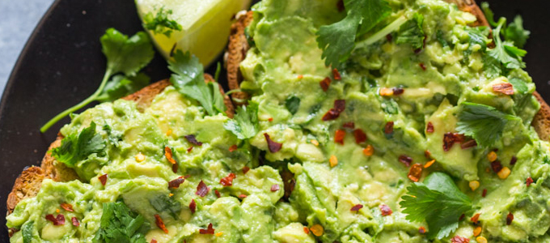

Tras el éxito del pasado taller de cocina healthy que impartimos en Farmacia Soler, esta vez te queremos agradecer tu confianza con un taller dedicado a explicar y enseñar cómo diseñar y organizar un desayuno saludable para ti y toda tu familia
Prisas, falta de hambre, “me va bien cualquier cosa”, no sin mi café…
Las excusas y las objeciones no son un impedimento para conocer cuáles son las pautas básicas para realizar un desayuno correcto.
¿POR QUÉ ES TAN IMPORTANTE DESAYUNAR DE FORMA SALUDABLE?
Fijaros que anuncio la palabra “saludable” sin nombrar que el desayuno es la comida más importante del día… ¡porque no lo es! Sí es importante, pero lo es más si este desayuno es saludable.
¿QUÉ ENTENDEMOS POR SALUDABLE?
Como os comenté en el anterior post saludable lo simplifico a la ausencia de productos que no tienen un valor nutricional, solo nos dan energía nos dan saciedad placentera por unos instantes y nada más. Como ya habrás podido reconocer, seguro que te han venido a la mente productos como (se llaman productos y no alimentos): bollería, madalenas, galletas, embutidos, derivados lácteos, cafés preparados refrigerados (tipo “café latte”) y otros del estilo.
Se conoce que un desayuno a base de bollería, aunque en este desayuno haya otro tipo de alimentos más saludables, afecta a la incidencia del sobrepeso y obesidad tanto en niños como en adultos.
La bollería y otro tipo de productos de bajo valor nutricional no deben formar parte de una alimentación habitual, sino que su consumo debe ser esporádico (y se debe fijar esporádico a no más de 1 vez al mes o incluso más tiempo).
ALIMENTOS BÁSICOS PARA UN DESAYUNO.
Debemos tener al alcance alimentos saludables para un correcto desayuno. Estos alimentos son fáciles de conseguir en nuestro entorno, y que sean además de escaso o nulo procesado.
PAN (INTEGRAL), CEREALES (COPOS DE AVENA), FRUTA, FRUTOS SECOS, LECHE, YOGUR, BEBIDAS VEGETALES, HORTALIZAS FRESCAS COMO ZANAHORIAS Y TOMATES, INCLUSO ALIMENTOS DE ORIGEN ANIMAL COMO HUEVOS Y CONSERVAS DE PESCADO.
VERSIÓN SALADA DE DESAYUNO

Te gusta más optar por un desayuno salado… te propongo el pan con aceite, huevo, conserva de pescado, opta por las carnes procesadas como el jamón, jamón cocido o de pavo ¡lo menos posible!
Prepárate tostadas con tomate rallado y aguacate. Zumo de tomate, crepes de harina integral con queso fresco y lechuga…
¿Y por qué no? Una deliciosa crema de cacahuete casera con un toque de sal (no te pierdas la receta del taller).
VERSIÓN DULCE DE DESAYUNO
No te preocupes si te has decepcionado al leer que no debes consumir ni galletas ni madalenas y lo haces, pues hay versiones igual de dulces y mucho más nutritivas que te ayudarán a llevar un desayuno saludable.
Recuerda que la fruta calentada y chafada (¡no licuamos ni trituramos!) es una alternativa a la mermelada. Las compotas de fruta sin azúcar también son una buena opción. Puedes espolvorear con cacao en polvo puro y sin azúcar, canela, rallar jengibre y cualquier otra especie y condimento si es de tu gusto.
Los dátiles, pasas, orejones y la fruta desecada en general es una alternativa saludable a cualquier chuchería e incluso al azúcar simple que usamos para la repostería.
¿TE PONES AZÚCAR AL CAFÉ E INFUSIONES?
La alternativa “saludable” sería un edulcorante, pero te recomiendo que ya que debes acostumbrarte a cambiar el sabor del azúcar por otra cosa, que esta sea al sabor del propio alimento sin alterar su sabor primitivo.
TE PIRRA EL CHOCOLATE… no te pierdas la receta de la crema de cacao que te proponemos. Para untar tu pan preperido, hacer rellenos de creppes, o simplemente para comer ¡a cucharadas!
Y, ¿SI NO TENGO HAMBRE POR LA MAÑANA?
Eres de los que no desayunas o pasas con un simple café.. No es necesario levantarte y comer si eres de los que no tienen hambre y basta solo con un café o nada. Lo importante es tener a tu alcance alimentos nutritivos a lo largo de la mañana para no caer en la tentación de tomar productos que no te convienen.
Recuerda que la mejor manera de tener a mano los alimentos más saludables debes tener una pequeña organización y planificar tu despensa. O bien, si dejas siempre a la improvisación escoge fruta, frutos secos antes que las galletas y los procesados.